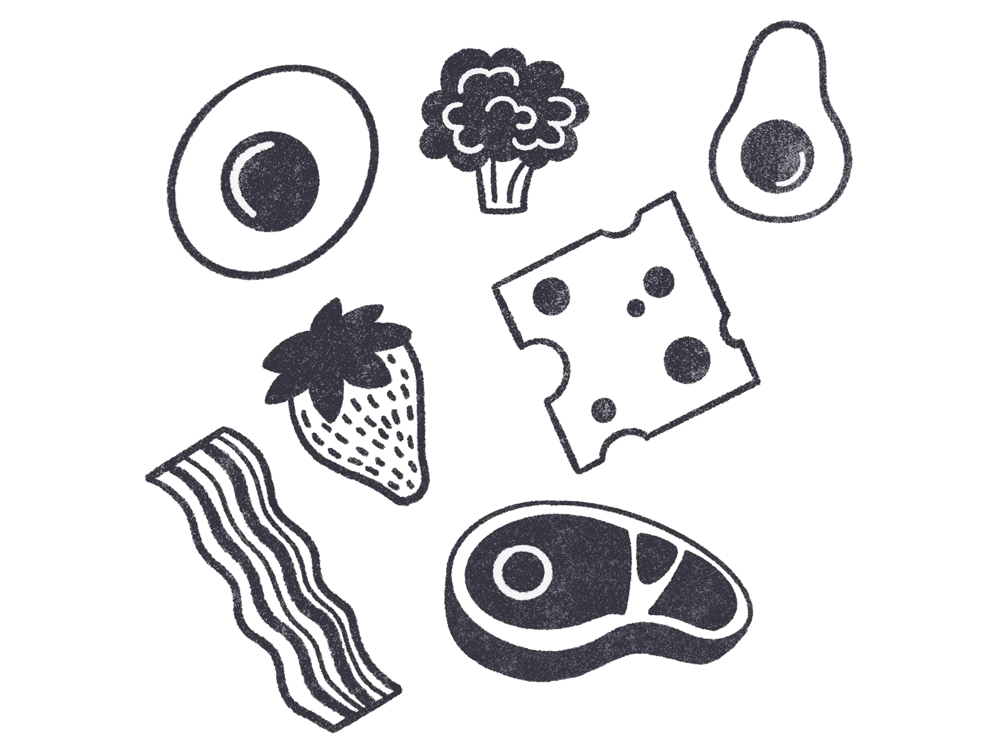

our mission is...
to protect people's beautiful food in their homes. It's hard to keep track of when your groceries go bad, which often ends up with throwing away wasted food. However, Foodiful makes it easy to keep track of expiration dates and allows you to manage your food conveniently.